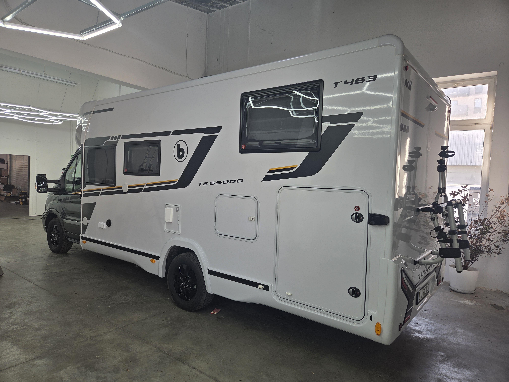
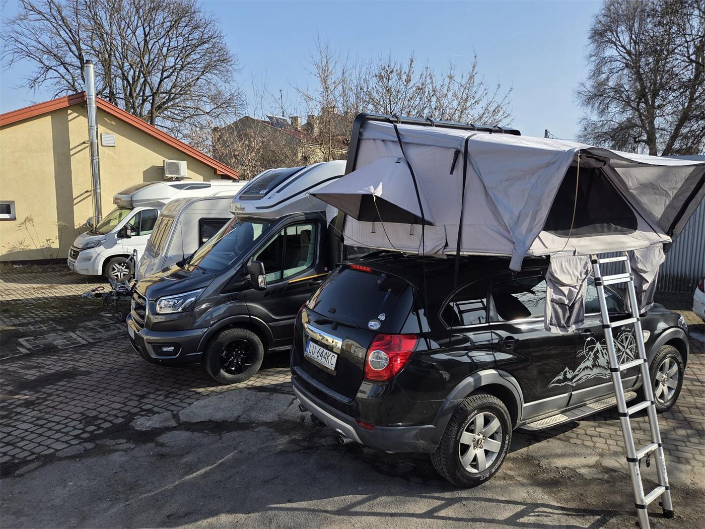

{kind=link}
{kind=link}
{kind=link}
{kind=link}
{kind=link}
{kind=link}
{kind=link}
{kind=link}
{kind=link}
{kind=link}
{kind=link}
{kind=link}
{kind=link}
{kind=link}
{kind=link}
{kind=link}
Leśny biwak
Cisza, zapach sosen i przyczepa zaparkowana wśród drzew – tak wyglądają nasze ulubione przystanki.
Wynajem w Lublinie · Chołody Auto Serwis
„Samochody to nasza pasja, a podróże to hobby"
Kompletne wyposażenie na wakacyjną podróż – od fabrycznie nowego kampera po drobny sprzęt turystyczny.
Nowy Benimar Tessoro T463 (2026) na Fordzie – automat, dla 5 osób.
Zobacz →Bailey Pageant Series 5 z moverem – holujesz na kat. B, dla 3–4 osób.
Zobacz →Twarda obudowa hard-top, 2×2 m – komfortowy sen nad ziemią.
Zobacz →Box dachowy, bagażnik na 3 rowery na hak, namiot biwakowy 4-osobowy.
Zobacz →Jesteśmy lubelskim warsztatem Mechanika Pojazdowa Dariusz Chołody (Chołody Auto Serwis). Od 20 lat samochody to nasza pasja, a niezależna turystyka – nasze hobby.
Każdy pojazd wydajemy perfekcyjnie przygotowany i sprawdzony technicznie, bo wiemy, jak ważny jest spokój i bezpieczeństwo w trasie. Wystarczy spakować walizki i ruszyć przed siebie.

Fabrycznie nowy, w pełni wyposażony, półzintegrowany kamper na bazie Forda Transita, który pomieści 5 osób. Prowadzisz na prawo jazdy kat. B.
Komfortowy pojazd idealny na wakacje z rodziną, wypad we dwoje czy aktywny urlop w plenerze. Klimatyzacja postojowa chłodzi nawet przy wyłączonym silniku, a ogrzewanie i ciepła woda na diesel dają komfort niezależnie od pogody i pory roku.
W cenie ubezpieczenie OC/AC + Assistance. Opłata serwisowa obejmuje przygotowanie pojazdu, dezynfekcję i ozonowanie wnętrza, gaz, chemię i papier do WC, czystą wodę oraz opróżnienie zbiorników po zwrocie. Minimalny najem w sezonie wysokim: 7 dni.
Komfortowa, w pełni wyposażona przyczepa cenionej brytyjskiej marki dla 3–4 osób. Holujesz ją na zwykłe prawo jazdy kat. B.
Idealna na rodzinne wakacje i wypady za miasto. Po dojechaniu na miejsce odpinasz ją od auta i masz pełną swobodę – samochodem ruszasz dalej zwiedzać okolicę. Napęd manewrowy (mover) pozwala ustawić przyczepę bez samochodu.
Minimalny najem: 2 doby (5 dób w lipcu–sierpniu). Opcja „pod klucz": na życzenie dowieziemy i ustawimy przyczepę na miejscu oraz rozłożymy przedsionek – koszt ustalamy indywidualnie (zależnie od odległości).
Komfortowy namiot dachowy w twardej obudowie – gotowe miejsce do spania nad ziemią. Rozkładasz w kilka minut, gdziekolwiek jesteś.
Twarda obudowa zamienia każdy samochód w mobilną sypialnię – aerodynamiczna, odporna na każdą pogodę. Świetne rozwiązanie na spontaniczne wyprawy, wakacje i nocleg w drodze.
Montaż: namiot mocuje się na belkach poprzecznych dachu. Dołączone 2 belki nie pasują do wszystkich relingów – najlepiej dysponować własnymi, dopasowanymi do dachu auta. Chętnie doradzimy w kwestii kompatybilności – zadzwoń przed rezerwacją. Opcjonalnie: rozkładana skrzynia biwakowa z naczyniami i kuchenką – zestaw „pod klucz".
Dobierz dodatki do kampera, przyczepy lub własnego auta. Możesz wypożyczyć kilka rzeczy naraz i ruszać w drogę.
Dodatkowa, zamykana na klucz przestrzeń bagażowa – bagaż całej rodziny, narty, sprzęt sportowy. Montaż na belkach poprzecznych.
25 zł / doba · tydzień 120 złkaucja 300 złMontowany na hak holowniczy, uchylny – wygodny dostęp do bagażnika auta nawet z zamontowanymi rowerami. Stabilny transport do 3 rowerów.
25 zł / doba · tydzień 120 złkaucja 300 złPrzestronny, 2-komorowy (2 sypialnie + przedsionek) – idealny na rodzinny biwak, festiwal czy wypad nad jezioro. Szybki montaż, komplet stelaża.
40 zł / doba · tydzień 200 złkaucja 200 złDostępna też rozkładana skrzynia biwakowa z naczyniami i kuchenką – gotowy zestaw na wyjazd „pod klucz". Sprzęt można wypożyczyć osobno lub razem z kamperem czy przyczepą. Zapytaj o szczegóły →
Ceny za dobę zależą od sezonu i długości wynajmu. Przy dłuższych terminach przysługują rabaty.
| Co wynajmujesz | Cena za dobę | Kaucja | Opłata serwisowa |
|---|---|---|---|
| Kamper Benimar Tessoro T463 nowy 2026, 5 osób, automat | od 450 do 699 złdokładną cenę ustalamy telefonicznie | 5 000 zł | 350 zł |
| Przyczepa Bailey Pageant Series 5 3–4 osoby, mover | od 130 złdo 220 zł latem | 1 500 zł | 150 zł |
| Namiot dachowy hard-top 4 osoby, 2×2 m | 130 złweekend 300 zł · tydzień 650 zł | 1 000 zł | — |
| Box dachowy | 25 złtydzień 120 zł | 300 zł | — |
| Bagażnik na 3 rowery (hak) | 25 złtydzień 120 zł | 300 zł | — |
| Namiot biwakowy 4-os., 2-komorowy | 40 złtydzień 200 zł | 200 zł | — |
W cenie kampera ubezpieczenie OC/AC + Assistance. Rabaty przy dłuższym najmie. Dokładną wycenę dopasowaną do Twojego terminu przygotujemy telefonicznie – zadzwoń 798 554 325.
Miejsca, do których dojechały nasze kampery i przyczepy. Dodawaj kolejne zdjęcia i opisy ze swoich podróży.
Cisza, zapach sosen i przyczepa zaparkowana wśród drzew – tak wyglądają nasze ulubione przystanki.

Namiot dachowy rozłożony w kilka minut – mobilna sypialnia, gdziekolwiek zaprowadzi Cię droga.
Kamper gotowy do wyjazdu – wystarczy spakować się i ruszyć przed siebie.
Zadzwoń lub napisz – doradzimy, co najlepiej sprawdzi się na Twoją podróż, i ustalimy termin. W sezonie miejsca znikają błyskawicznie!
798 554 325Wynajem kamperów, przyczep i sprzętu turystycznego — Lublin i okolice · Chołody Auto Serwis
{kind=link}